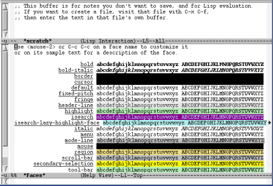
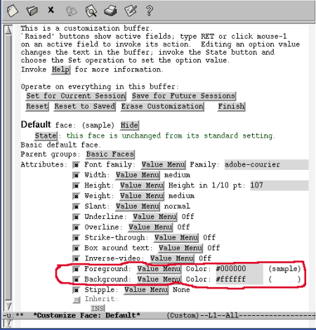

15. Ejemplos de personalización de Emacs
Pág.Anterior | Índice | Pág.Siguente
Seguidamente, através de varios casos de modificaciones que se realizan con bastante frecuencia, vamos a ver en acción las diversas formas de personalizar Emacs.
Nos vamos centrar en modificaciones que afectan a las fuentes y los colores, a la personalización de las combinaciones de teclas asociadas a los comandos y a como configurar las variables en Emacs.
15.1 Modificación de las Fuentes y los Colores.
Pág.Anterior | Índice | Inicio Página | Pág.Siguente
La actual versión estable de Emacs para Linux, la 21.4.1, puede utilizar diversas fuentes de anchura fija, pero aún no es capaz de proporcionar fuentes proporcionales. .
También nos ofrece la posibilidad de varias combinaciones de colores de fondo, colores de fuentes y de resaltado de texto.
Antes de comenzar con la descripción de los procesos para la personalización de fuentes y colores, conviene aclarar uno de los conceptos utilizados en Emacs; se trata del concepto Faces. En Emacs se denomina face a una determinada combinación de texto y color.
15.1.1 Cambio de las Fuentes.
Pág.Anterior | Índice | Inicio Página | Pág.Siguente
El medio más fácil y cómodo para realizar el citado cambio es através del menú:
Edit --> Text Properties
Recordemos que también puede accederse al menú presionando C-<Bcentro>, con el puntero del ratón situado en el interior de la zona de edición
En el menú Edit --> Text Properties nos encontramos con una serie de faces predefinidas, así como con la posibilidad de definir otras distintas de estas.
Al activar el menú:
Edit --> Text Properties --> Display Faces
Nos aparece el buffer *Faces*, conteniendo una relación de faces predefinidas
|  |
Vamos a comenzar explicando como proceder a la Personalización de las Fuentes mediante Custom:.
Custom es una via muy adecuada para la personalización de fuentes y colores.
La via más rápida de arrancar Custom a este propósito es ejecutando el siguiente comando:
M-x customize-group <Enter>
Cuando se nos pida el nombre del grupo : faces
También podemos acceder através de las opciones de menú:
Options --> Customize Emacs --> Specific Group
Options --> Customize Emacs --> Specific Face
En el primer caso se nos pedirá que introduzcamos el nombre del grupo, en el segundo, el nombre de la face
Nos aparecerá una pantalla como ésta:
Operaremos en Customs como se explicó en el capítulo anterior.
Con respecto al cambio de colores, podemos cambiar el color del texto y/o el color del fondo:
Cambio del color del fondo: M-x set-background-color <Enter>
Cambio del color del texto: M-x set-foreground-color <Enter>
En ambos casos, se nos pedirá que introduzcamos el nombre del color (en inglés). Si pulsamos <Tab>, se nos abrirá el buffer *Completions* con el listado de posibles colores que podremos seleccionar:
También es posible realizar estos cambios del color sobre regiones seleccionadas ( que pueden ser el buffer completo....) através del menú:
Cambio del color del fondo: Edit -->Text Properties --> Background color
Cambio del color del texto: Edit --> Text Properties --> Foreground Color
En ambos casos, si seleccionamos la opción other.. se nos pedirá la introducción del nombre del color. Podemos utilizar la función de autocompletado de la tecla <Tab> tal como se explicó anteriormente.
Hay otra via para acceder al listado de los colores:
Edit -->Text Properties --> Display Colors
Se nos abrirá el buffer *Colors* , conteniendo también un listado de nombres de colores con una "muestra" del color a que se refiere:
Los nombres de los colores que se nos presentan en el buffer *Colors* como en el *Completions* pueden utilizarse cuando realizamos estas operaciones através de Custom,
El acceso al menú de personalización del color de fuentes y fondo de Custom es:
- Opción de menú : Options --> Customize Emacs --> Specific Face
- Comando "largo" : M-x customize-face <Enter>
- En ambos casos se nos pedirá que introduzcamos el nombre de la face, que en este caso es : default
Nos aparecerá una pantalla de Custom parecida a la siguiente:
|  |
Podemos observar como el color del texto (foreground) está establecido en negro y el del fondo (background) en blanco (#000000 y #ffffff, respectivamente, en formato hexadecimal).
En lugar de los códigos hexadecimales podemos utilizar cualquira de los nombres de colores mencionados anteriormente. En la siguientes imágenes se muestra el cambio del color del fondo a una tonalidad del azul y del color del texto a blanco:
Un caso de personalización que nos puede resultar de utilidad en determinadas circunstancias es el cambio del color del cursor:
M-x set-cursor-color <Enter>
15.1.2 Texto "enriquecido".
Pág.Anterior | Índice | Inicio Página | Pág.Siguente
Se ha estado insistiendo que Emacs es, ante todo, un editor de texto, no un procesador de texto.
Por ello, si en nuestro trabajo cotidiano necesitamos utilizar una considerable cantidad de texto enriquecido, tal vez lo más aconsejable sea considerar la utilización de una aplicación distinta de Emacs.
Seguidamente vamos a comentar ,brevemente, las opciones que nos presenta Emacs para este propósito.
Operaremos através de la siguiente opción de menú:
Edit --> Text Properties --> Face
Se nos presenta una ventana de menú con las opciones disponibles para "decorar" el texto:
Cono es normal, cada opción del menú se corresponde con un comando. Los comandos correspondientes a las opciones de "enriquecimiento" del texto son:
- Comando : M-g d : Modo por defecto
- Comando : M-g b : Negrita ( bold)
- Comando : M-g i : Cursiva (itálica)
- Comando : M-g l : Negrita-cursiva
- Comando : M-g u : Subrayado
- Comando : M-g o : Otros.
La forma más sencilla de aplicar estas opciones consiste en seleccionar el texto sobre el que se desea aplicarlas y ejecutar el comando.
Otra forma es, antes de comenzar el texto que deseamos enriquecer, teclear el comando que deseamos aplicar, introducir el texto y , para finalizar, regresar al modo por defecto ejecutando M-g d .
La opción isearch provoca el resaltado del texto.
La opción M-g o, (Otros) , nos permite aplicar una face introduciendo su nombre en el mini-buffer. Como siempre, si en lugar de introducir el nombre ejecutamos la acción de autocompletado con <Tab>, se abrirá un buffer *Completions* con las posibles opciones.
Finalmente, mostramos unos ejemplos de texto a los que se han aplicado los comandos descritos:
15.1.3 Resaltado del texto.
Pág.Anterior | Índice | Inicio Página | Pág.Siguente
En Emacs son muchos loa módulos, sobre todo los módulos de programación, que incluyen el reasaltado y coloreado del texto.
La manera de personalizar esta característica depende en gran medida de cada módulo en particular. Aquí vamos a tratar solo de su personalización en la función de búsqueda:
M-x customize-group <Enter>. Cuando nos solicete que entremos el nombre del grupo, tecleamos: isearch-faces.
Se nos abrirá la ventana de Custom correspondiente a este grupo.
Otra via es atraves del menú :
Edit --> Text Properties --> Face --> Other...
Si cuando nos pide que introduzcamos el nombre de la face, ejecutamos la acción de autocompletado, pulsando la tecla <Tab>, se abrirá un buffer *Completions* con las posibles opciones a personalizar: Isearch e Isearch Lazy Highlight Face.
15.2 Personalización de las teclas asociadas a los comandos.
Pág.Anterior | Índice | Inicio Página | Pág.Siguente
Las asociaciones combinación_de_teclas-comando que Emacs nos presenta por defecto suelen ser adecuadas para la mayoria de los usuarios.
Pero se debe tener en cuanta que Emacs dispone de centenares de comandos de los cuales, sólo una parte tiene asociada una combinación de teclas que posibilite su ejecución. Cuando se deban de utilizar con frecuencia algunos de estos comandos sin teclas asociadas, puede ser convenente pensar en configurar una combinación de teclas que nos facilite su ejecución.
Antes de seguir debemos hacer una aclaración: La asociación básica y por defecto entre teclas y caracteres se localiza en un mapa de caracteres denominado global-map.
Cuando pulsamos una tecla, Emacs buscará primero en el mapa de caracteres local del buffer en que operamos la asociación tecla-caracter. Si no la encuetra en el mapa local, irá a buscarla en el global-map.
Además del global-map disponemos de de mapas especiales para las teclas Ctrl-x y Esc ; en donde x representa a cualquier caracter. Estos son, respectivamente: ctl-x-map y el esc-map
Pueden crearse las propias asociaciones de teclas-comandos adicionando entradas en el mapa de caracteres através de tres funciones:
- (define-key mapa_de_caracteres "combinacion_teclas" 'nombre_comando) (fijémonos en la comilla simple al inicio del 'nombre_comando)
- (global-set-key "combinacion_teclas" 'nombre_comando)
- (local-set-key "combinacion_teclas" 'nombre_comando)
La función define-key es la más general, ya que asocia teclas en cualquier mapa de caracteres.
La función global-set-key realiza la asociación solo en global-map.
local-set-key realiza la asociación solo en el mapa de caracteres local del buffer corriente, por lo que la vigencia de la asociación que realicemos mediante esta función será la de la sesión de Emacs en curso.
Existe una convención para caracteres especiales:
| \C-x | C-x (*) |
| \e | Tecla Esc |
| \C-] | Tecla Esc |
| \n | Nueva linea |
| \C-j | Nueva linea |
| \r | Tecla Enter |
| \C-m | Tecla Enter |
| \t | Tecla Tab |
| \C-i | Tecla Tab |
(*) : En este caso x representa a un caracter cualquiera.
Los carácteres de Control no son sensibles a la caja tipográfica, pero sí los carácteres que le siguen.
Así, por ejemplo xyz\C-a\ntiro equivale a xyz, C-a , nueva linea, tiro
Veamos ahora como funciona esto:
Si quisieramos asociar el comando find-file con la tecla a, añadiriamos la siguiente linea al archivo .emacs:
( global-set-key "a" 'find-file)
También podriamos usar la siguiente:
(define-key global-map "a" 'find-file)
En el caso de usar un mapa local, sustituiriamos global-map por el nombre del mapa local usado.
En el caso de asociar un comano con alguna tecla con mapa de caracteres propios, como por ejemplo, la tecla Control tendriamos una opción más. Supongamos que deseamos asociar el comando goto-line con la combinación C-x l . Las opciones serian:
( global-set-key "\C-xl" 'goto-line)
( define-key global-map "\C-xl" 'goto-line)
Si decidimos usar un mapa local, sustituiriamos global-map por el nombre del mapa local usado.
( define-key ctl-x-map "l" 'goto-line)
En este caso especificamos sólo la l ya que la combinación C-x se define es el mapa de la tecla, ctl-x-map ( puede considerarse un caso particular de mapa local).
Una vez efectuado modificado el archivo .emacs, necesitamos ejecuralo ( evaluarlo) para que el cambio surta efecto. para ello ejecutaremos el siguiente comando:
M-x eval-courrent-buffer <Enter>
Con el cursor el la línea del código que hemos introducido, ejecutamos el comando:
C-x C-e
Se ejecuta la linea de código sobre la que se encuentra el cursor, apareciendo el resultado el mini-buffer, en este caso, find-file:
Tras estos dos últimos pasos puede procederse a guardar el archivo .emacs modificado.
De no realizarse estas operaciones finales, los cambios efectuados no serian efectivos hasta la siguiente sesión de Emacs.
15.2.1 Asociación de comandos con teclas especiales.
Pág.Anterior | Índice | Inicio Página | Pág.Siguente
La asociación de comandos con teclas especiales, como son las teclas de flechas, las teclas de función, teclado numérico...etc. sigue un proceso algo más complejo :
- Deben usarse los nombres Lisp de las teclas.
- Los nombres de las teclas, en vez de ir entre dobles comillas (" ") se colocarán entre corchetes ( [ ]
Los nombres que debemos usar para las teclas son:
| DEL | BackDel |
| backspace | BackDel |
| delete | Supr |
| up | Flecha arriba |
| down | Flecha abajo |
| right | Flecha derecha |
| left | Flecha izquierda |
| f1..f35 | F1 ... F35 |
| home | Inicio |
| end | Fin |
| help | Ayuda |
| kp-0..kp-9 | Num. de teclado numérico |
| kp-enter | Intro de teclado numérico |
| next | AvPág |
| prior | RePág |
Un ejemplo: si quisiéramos asociar la tecla 3 al comando safe-buffer :
( global-set-key [1] 'safe-buffer)
15.2.2 Anular las asociaciones de teclas.
Pág.Anterior | Índice | Inicio Página | Pág.Siguente
Para anular las asociaciones de teclas utilizaremos global-unset-key y define-key con la siguiente sintaxis, (aplicada a ejemplos anteriores):
( global-unset-key [1])
( define-key ctl-x-map "l" nil)
De todas formas, un buén método seria editar .emacs y comentar o eliminar las líneas correspondientes.
15.3 Configuración de las variables de Emacs.
Pág.Anterior | Índice | Inicio Página | Pág.Siguente
Otra de las vias de que disponemos para modificar el comportamiento de Emacs es através de la configuración de sus variables.
Para establecer el valor de una variable, debemos utilizar la función setq en el archivo .emacs :
( setq variable valor) ; por ejemplo: ( setq auto-save-interval 800)
Los valores pueden ser :
- Números enteros
- Valores Booleanos:
- t: verdadero (true)
- nil: falso
- Cadenas: Deben ir entre dobles comillas
- Caracteres: Se especifican como las cadenas, pero deben ir precedidos del símbolo ?
- Símbolos: Se especifican con una comilla simple seguida del símbolo.
Emacs dispone de más de 2.500 variables.
Para buscar la variable adecuada a nuestros propósitos puede utilizarse el comando apropos-variable, que se explicará en el capítulo: El sistema de Ayuda en Emacs [18.2]
Muchas de las variables de Emacs pueden tener valores distintos para cada buffer (valores locales), así como un valor por defecto, que es el que asumirán cuando no haya especificaciones locales.
En general, disponemos de dos formas de configurar variables:
- setq : Para configurar valores locales
- setq-default : Para configurar el valor por defecto
- Símbolos: Se especifican con una comilla simple seguida del símbolo.